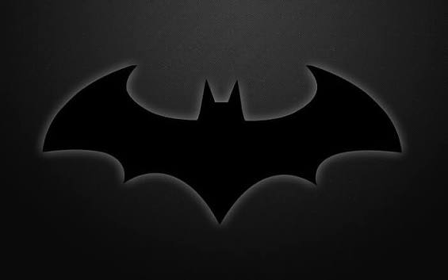
Michael Keaton — Bruce Wayne / Batman
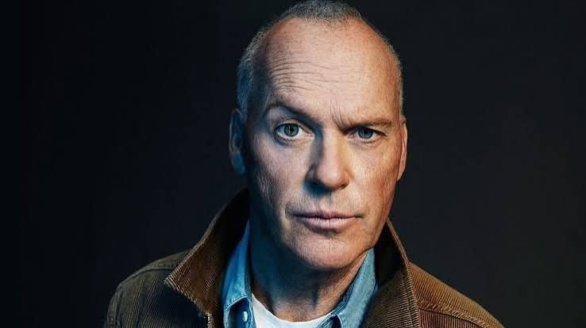
John Douglas (born September 5, 1951), known professionally as Michael Keaton, is an American actor. His accolades include a Primetime Emmy Award and two Golden Globe Awards, in addition to nominations for an Academy Award and a BAFTA Award. In 2016, Keaton received a star on the Hollywood Walk of Fame and was named Officer of Order of Arts and Letters in France
Jack Nicholson — Jack Napier / The Joker
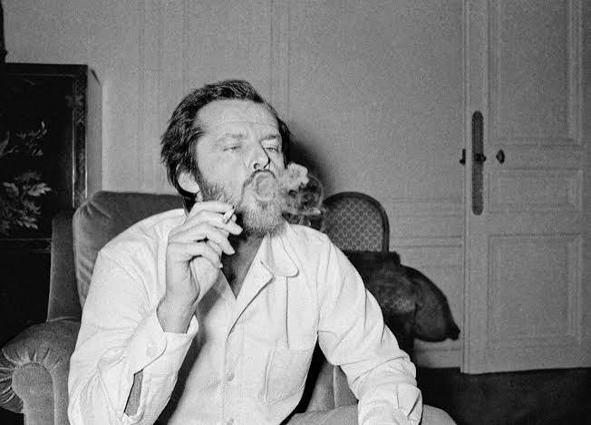
Joseph Nicholson (born April 22, 1937) is an American retired actor and filmmaker. Nicholson is widely regarded as one of the greatest actors of the 20th century, often playing charismatic rebels fighting against the social structure.Over his five-decade-long career, he received numerous accolades, including three Academy Awards, three British Academy Film Awards, six Golden Globe Awards, and a Grammy Award.
Kim Basinger — Vicki Vale
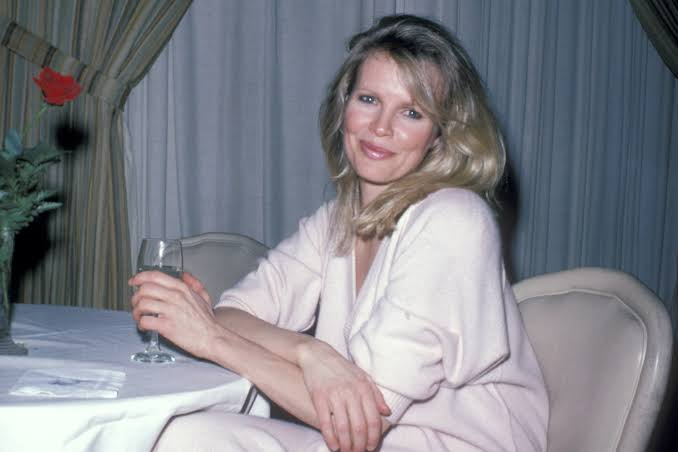
Kimila Ann Basinger (BAY-singer; born December 8, 1953) is an American actress. She has garnered acclaim for her work in film, for which she has received various accolades including an Academy Award, a Golden Globe Award, a Screen Actors Guild Award, and a star on the Hollywood Walk of Fame. Initially a TV starlet, she shot to fame as a Bond girl in 1983 and enjoyed a long heyday over the next two decades
Robert Wuhl — Alexander Knox
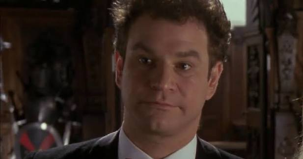
Robert Wuhl (born October 9, 1951) is an American actor, comedian, and writer.He is best known as the creator and star of the television comedy series Arliss (1996–2002) and for his portrayal of newspaper reporter Alexander Knox in Tim Burton's Batman (1989) and Larry in Bull Durham (1988).
Pat Hingle — Commissioner James Gordon
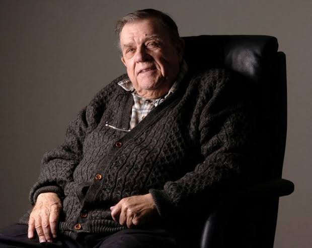
Martin Patterson Hingle (July 19, 1924 – January 3, 2009) was an American actor. He was best known to screen audiences for his character roles, often as tough blue-collar authority figures, in over 200 productions between 1954 and 2008
Billy Dee Williams — Harvey Dent
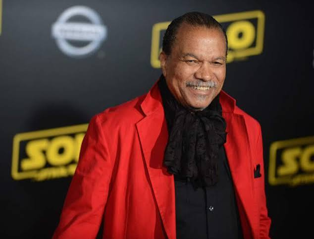
William December Williams Jr. (born April 6, 1937), known as Billy Dee Williams, is an American actor, novelist and painter. He has appeared in over 100 films and television roles over six decades.
Michael Gough — Alfred Pennyworth
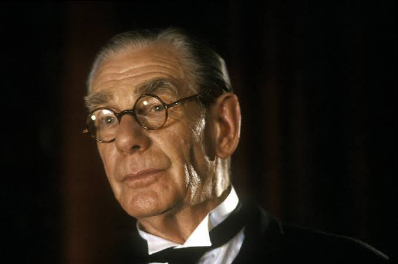
Francis Michael Gough (23 November 1916 – 17 March 2011) was a British actor who made more than 150 film and television appearances. He is known for his roles in the Hammer horror films, with his first role as Sir Arthur Holmwood in Dracula (1958), and for his recurring role as Alfred Pennyworth in the four Batman films directed by Tim Burton and Joel Schumacher (1989—1997).
Jack Palance — Carl Grissom
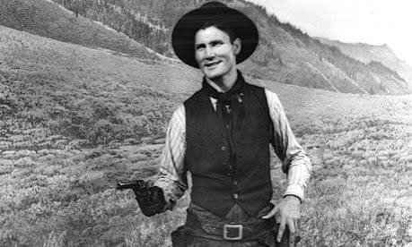
Jack Palance (born Volodymyr Palahniuk; February 18, 1919 – November 10, 2006) was an American actor. He was nominated for three Academy Awards, all for Best Actor in a Supporting Role, for his roles in Sudden Fear (1952) and Shane (1953), and winning almost 40 years later for City Slickers (1991).
Tracey Walter — Bob the Goon
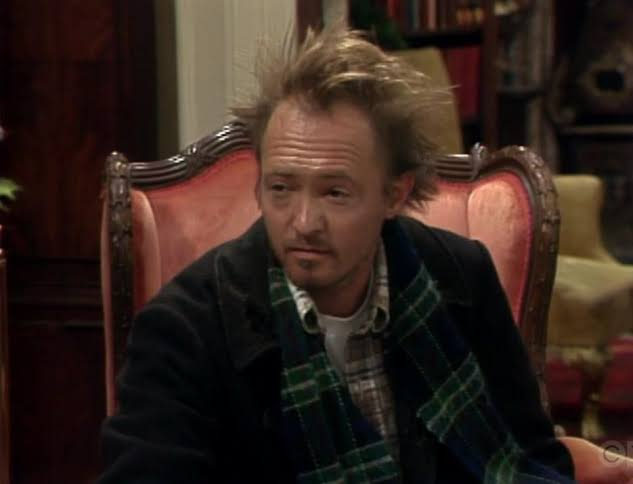
Tracey Walter (born November 25, 1947) is an American retired character actor, who appeared in more than 170 films and television roles. He is best known for his appearances alongside his real-life friend Jack Nicholson, as well as having been a regular collaborator of directors Jonathan Demme and Danny DeVito. He won a Saturn Award for Best Supporting Actor for his role as Miller in Repo Man.
Jerry Hall — Alicia Hunt
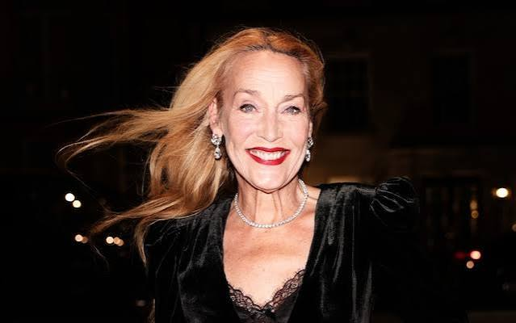
Faye Hall (born July 2, 1956) is an American model and actress. She began modeling in the 1970s and became one of the most sought-after models in the world.[2] She transitioned into acting, appearing in the 1989 film Batman. Hall was the long-term partner of Rolling Stones frontman Mick Jagger, with whom she has four children. She was the fourth wife of Rupert Murdoch until they divorced in 2022.